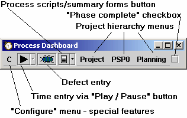

We feel that the PSP(SM) and the TSP(SM) are remarkable technologies that can change the face of the software industry, and we share the SEI's zeal to promote their widespread use. We feel that a freely available, powerful support tool could help to remove one of the most significant barriers to PSP / TSP adoption. We therefore aim to develop a world-class tool under the open-source model, and distribute it freely to anyone using the PSP and/or TSP. We feel that this is the least we can do to thank the SEI for developing and distributing these remarkable processes.
You have installed an optional module that contains PSP(SM) scripts, forms, and other materials. Special permission to use "PSP Materials.doc" copyright © 2006 by Carnegie Mellon University, in this module is granted by the Software Engineering Institute. The use of these materials is subject to license.
PSP process definitions for use with the dashboard are available, but regrettably, these process definitions must be distributed as a separate download from the Process Dashboard. (This change is effective beginning in version 1.6; for more information, click here.) To download the PSP process definitions, visit http://www.processdash.com
Personal Software Process(SM), PSP(SM), Team Software Process(SM), and TSP(SM) are service marks of Carnegie Mellon University. The open source team that writes the Process Dashboard is not affiliated with Carnegie Mellon University.
The personal Process Dashboard displays a streamlined user interface that helps individuals to edit plans, collect metrics, and analyze their data.

The Process Dashboard attempts to keep itself as small as possible to save valuable screen real estate for the actual work of software development. In a very small space the dashboard gives access to a stopwatch-like timer for timing activities, a defect entry dialog for capturing defect information, scripts and forms for following defined processes, a handy "completion checkbox" that allows a quick and easy way to tell the tool that a phase of development is complete, menus that allow navigation through the project work breakdown structure hierarchy, and a configuration menu to allow access to other features of the tool.
Pick an item for further help: